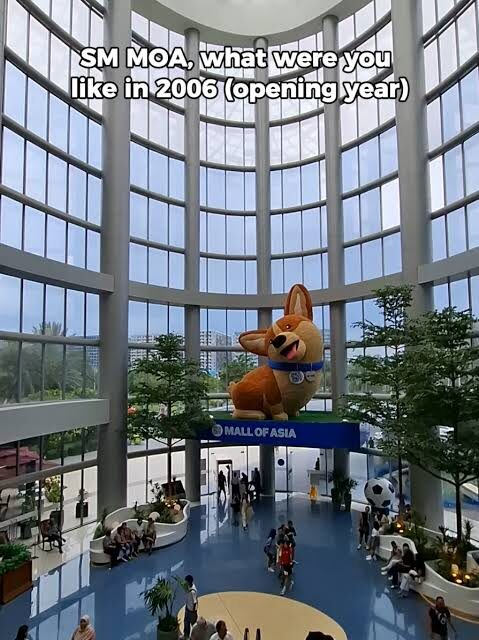

Step back into the decade that bridged the analog and the digital. The 2000s was a transformative era for the Philippines—a time when texts were limited to 160 characters, neighborhood internet cafes were the ultimate after-school hangouts, and primetime television dictated the rhythm of our evenings. This interactive exhibition preserves the iconic spaces, technologies, and performances that shaped a generation.
Enter the ExhibitionThis digital museum is designed to be fully interactive. Click on any artifact to reveal hidden trivia, historical context, and an in-depth look at how the innovations of the 2000s continue to influence the present day.
Three wings, fifteen artifacts. Each one opens onto its own gallery of photographs, hidden trivia, and a closer reading.

Explore the physical and virtual gathering grounds of the 2000s.
Enter wing →Discover the hardware and micro-economies that rewired how Filipinos communicated.
Enter wing →Meet the stars, shows, and spectacles that turned primetime into a shared national ritual.
Enter wing →Follow the timeline, then click any moment to visit its exhibit.